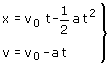
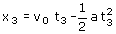
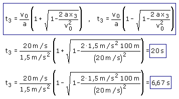
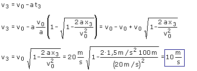

c)
Ecuaciones del movimiento:
|
|
 |
Parámetros: v0 = 72 km/h = 72·1000 m/3600 s = 20 m/s a = 1.5 m/s2 |
Aplicación:
Datos: x3 = 50 m, Incógnitas: t3 , v3
|
|
 |


¿Como puede ser que pase dos veces por el mismo sitio?
Para interpretar una solución hay que conocer los valores de todas las variables, así que vamos a calcularnos la velocidad correspondiente a cada uno de los tiempos obtenidos:
|  |
|
| El coche está 50 m a la derecha del observador moviéndose hacia a la derecha a 10 m/s, es decir se mueve en la misma dirección que al principio pero más lentamente. Esto es lo que ocurre cuando un coche frena, por tanto esta solución es válida |
|
| Visto de otra forma: el coche se detiene a los 13.3 s y una vez que se detiene desaparece la aceleración de frenado y no servirán las ecuaciones del movimiento. Las soluciones de la ecuación para tiempos superiores a 13.3 s carecerán de sentido |
|